Donc j'ai découvert comment transformer Claude Code en le meilleur partenaire commercial qu'on puisse espérer, et j'ai gagné trois fois plus d'argent au cours des 30 derniers jours. Vous voyez, Claude a ces problèmes que beaucoup de gens ne remarquent jamais, et chacun d'eux vous coûte du temps et de l'argent sur des choses qui ne marcheront jamais. Donc ce que j'ai fait, c'est que j'ai construit un ensemble de quatre améliorations pour régler chacun de ces problèmes. Donc ces quatre améliorations transforment Claude en quelque chose qui vous fait réellement gagner de l'argent au lieu de simplement vous faire perdre votre temps. Et peu importe que vous essayiez de créer une application, que vous dirigiez une agence ou que vous fassiez du conseil en IA, cela fonctionne pour tout ce que vous voulez faire à l'intérieur de Claude Code. Donc dans cette vidéo, je vais vous montrer, les gars, les quatre améliorations et exactement comment vous pouvez les utiliser pour gagner plus d'argent. Donc entrons dans le vif du sujet. Claude a quelques habitudes qui
Interface & Outils : Terminal de commande, interface CLI Claude Code, graphique animé de présentation.
Contenu textuel & Code : Commande `claude --dangerously-skip-permissions`, code source modifié avec des blocs de notes de transmission (handoff-notes.md), et liste des 4 mises à niveau.
Action / Démonstration : Exécution d'une commande dans le terminal et affichage d'un résumé graphique des fonctionnalités présentées.
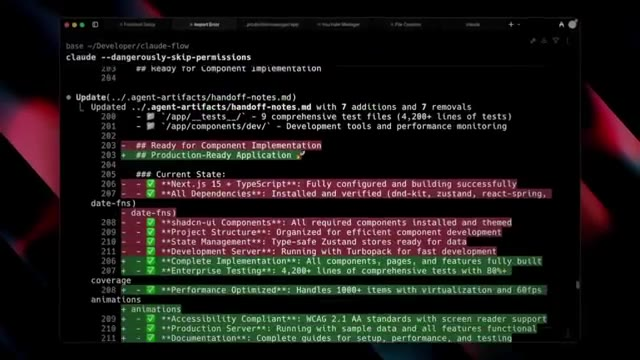
🔍 Agrandir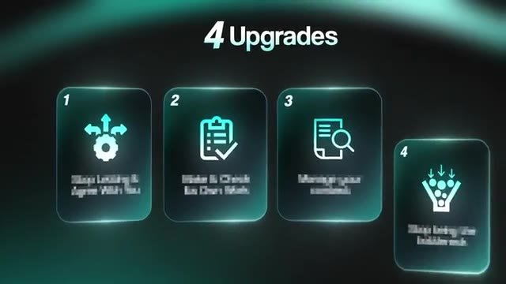
🔍 Agrandirtravaille discrètement contre ce que vous essayez de faire. De petites choses auxquelles vous ne prêtez peut-être même pas attention. Alors, pensez à la façon dont la plupart des gens utilisent Claude. Vous l'ouvrez, vous tapez ce que vous voulez, vous obtenez une réponse, et vous supposez simplement que c'est la meilleure réponse possible que vous auriez pu obtenir parce que, vous savez, Claude Code est l'un des meilleurs outils d'IA sur le marché et les modèles sous-jacents comme Opus sont super, super intelligents. Il est donc très facile de faire simplement confiance à ce qu'il dit. Mais il y a ces erreurs qui sont intégrées dans la conception de Claude et qui rendent vos résultats pires qu'ils ne devraient l'être. Ainsi, par défaut, Claude est configuré pour vous faire sentir productif. Il n'est pas configuré pour vous faire gagner de l'argent. Et ce sont deux choses complètement différentes. Et chacune de ces erreurs de conception vous coûte de l'argent parce que vos revenus sont fondamentalement limités par deux choses. La première est la qualité
Interface & Outils : Interface web de chat type LLM
Contenu textuel & Code : Question : 'Is an AI app that creates exciting, personalized daily routines a good idea?' et bulle 'Thinking...'
Action / Démonstration : Saisie d'une invite et réflexion en cours de l'IA
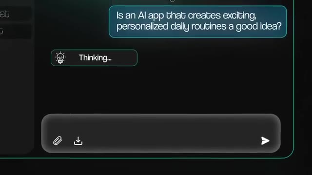
🔍 Agrandirde votre production. Et le deuxième est la rapidité avec laquelle vous pouvez la produire. Donc, meilleur est le résultat que vous obtenez et plus vite vous l'obtenez, plus vous pouvez gagner d'argent. Je suis sûr que nous pouvons tous penser à de nombreux moments précis où l'on avait l'impression que Claude essayait juste de nous faire dépenser plus de jetons ou nous mentait sur des fonctionnalités qu'il avait intégrées, ou où l'on a l'impression de se répéter sans arrêt. Mais la bonne nouvelle, c'est que vous n'avez pas besoin de réécrire le code source de Claude pour corriger tout cela. Vous avez littéralement juste besoin de ces quatre mises à niveau. Et avant de commencer à les utiliser, je me rappelle avoir lancé des promotions qui n'ont pas du tout bien fonctionné, ou avoir déployé des automatisations qui échouaient en silence, ou avoir publié des sites Web ou des applications bourrés de bugs. C'est donc à peu près tout le parcours. Mais avant d'aborder la première mise à niveau, si vous souhaitez obtenir ces invites et compétences et voir vos résultats
Interface & Outils : VS Code
Contenu textuel & Code : Arborescence de projet dans VS Code et code/instructions textuelles sur l'audit de compétences.
Action / Démonstration : Navigation et affichage d'un projet de code dans l'éditeur.
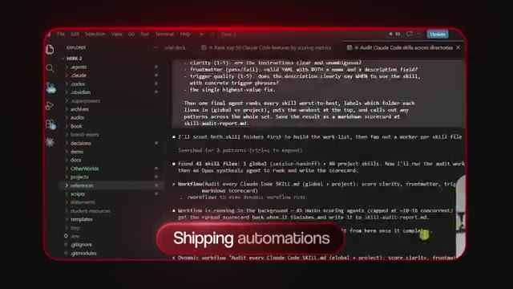
🔍 Agrandirs'améliorer, puis vous pouvez les obtenir de manière totalement gratuite à l'intérieur de ma communauté School gratuite. Le lien pour cela se trouve dans la description. D'accord, donc la première mise à niveau résout le plus grand problème, qui est simplement que Claude est d'accord avec tout ce que vous dites. Je veux dire, n'avez-vous jamais remarqué que vous dites à Claude que vous voulez faire quelque chose et qu'il dira presque toujours quelque chose comme, hé, c'est une excellente idée. Tu es vraiment intelligent parce qu'il veut que tu l'aimes. Mais alors, que se passe-t-il réellement si vous dites, tu sais quoi ? J'ai changé d'avis. Il va à nouveau revenir et dire, tu sais quoi ? Tu es vraiment intelligent.
Interface & Outils : Interface web Claude Code / Application de chat IA
Contenu textuel & Code : Texte de prompt saisi : « I want to build an AI app »
Action / Démonstration : Saisie d'un prompt utilisateur dans l'interface de l'application de code IA.
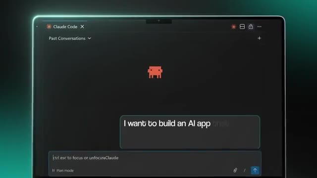
🔍 AgrandirJe suis content que tu aies changé d'avis. C'est une excellente idée. Et ça s'améliore avec le temps, car les modèles deviennent de plus en plus intelligents. Mais c'est un phénomène documenté. Les chercheurs appellent cela la sycophante, ce qui est juste un grand mot pour dire que l'intelligence artificielle est un béni-oui-oui. Il y a aussi une étude appelée Elephant, qui mesure exactement cela, et ils ont découvert que les modèles d'IA ne parviennent pas à contester la façon dont vous formulez quelque chose environ 88 % du temps. Et pour les humains, c'est autour de 60 %. Et cela empire en fait plus le modèle en sait sur vous. Des chercheurs du MIT et de Penn State ont découvert que les fonctionnalités de personnalisation et de mémoire ont tendance à rendre le modèle plus conciliant au fil d'une longue conversation. Et c'est un problème, car fondamentalement, plus vous travaillez avec et plus vous l'utilisez
Interface & Outils : Articles web et documents de recherche textuels affichés à l'écran.
Contenu textuel & Code : Textes scientifiques et articles de presse sur la notion de 'sycophancy' (sycophanie) des modèles d'intelligence artificielle et des LLM.
Action / Démonstration : Affichage de captures d'articles textuels illustrant le concept théorique de la sycophanie des IA.
il, ce que nous devrions tous vraiment essayer de faire, plus il devient fort pour vous dire ce que vous voulez entendre. C'est donc un correctif assez simple. Vous demandez à Claude de commencer à vous contredire, à faire de la résistance et à se faire l'avocat du diable avant de construire quoi que ce soit ou avant d'approuver le moindre plan. Et c'est toute l'idée derrière une compétence que j'ai créée appelée Roast. Ça sort essentiellement Claude de son mode d'approbation et ça le force à mettre votre idée et son propre travail à l'épreuve au lieu de se contenter d'approuver tout.
Interface & Outils : Interface de chat web (style LLM)
Contenu textuel & Code : "Start challenging me and pushing back and playing devil's advocate before you builds anything, before you approve any plan."
Action / Démonstration : Affichage à l'écran du prompt correctif à donner à l'IA pour éviter qu'elle ne dise uniquement ce qu'on veut entendre.
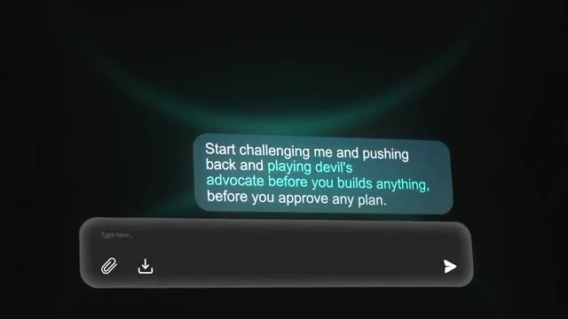
🔍 AgrandirDonc en gros, ce que fait Roast, c'ذcréer tout un conseil de personas qui l'attaquent sous différents angles. Vous avez donc un esprit contrarien dont le seul travail est de trouver les failles fatales. Nous avons un expansionniste qui cherche le plus grand potentiel de hausse. Nous avons un penseur axé sur les premiers principes qui travaille sans contexte extérieur, juste avec une logique pure. Nous avons un chercheur approfondi qui va réellement chercher et extraire un tas de données de marché réelles et les prix des concurrents sur le Web.
Interface & Outils : Graphique de présentation vidéo animé (type Motion Design)
Contenu textuel & Code : Noms des personas et descriptions de leurs rôles (Contrarian, Expansionniste, Principles thinker, Researcher)
Action / Démonstration : Présentation visuelle et progressive des différents rôles du conseil de personas de l'outil Roast.
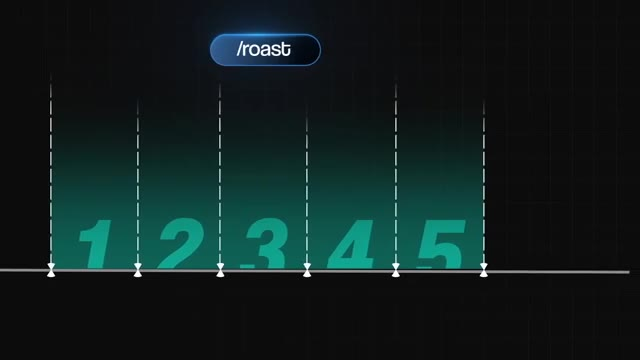
🔍 Agrandir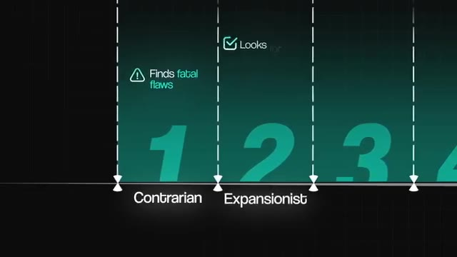
🔍 Agrandir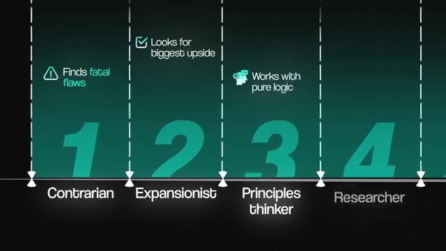
🔍 AgrandirEt ensuite, nous avons l'acheteur qui joue réellement le rôle de votre client et vous dit franchement s'il achète le truc ou non. Et enfin, le juge prend toutes ces conclusions et vous rend un verdict. Vous obtenez fondamentalement le feu vert, le remodelage, ou l'abandon. Et cela vous donne également le test le plus simple et le moins cher que vous puissiez mener dans les 48 prochaines heures pour savoir si l'idée vaut même la peine d'être poursuivie, même si elle a été remodelée.
Interface & Outils : Graphisme vidéo et présentation animée.
Contenu textuel & Code : Texte du diagramme illustrant les étapes : 'Researcher' (Pull out real market data) et 'Buyer' (Role plays as customer).
Action / Démonstration : Explication visuelle du rôle des différents agents dans le workflow d'automatisation.
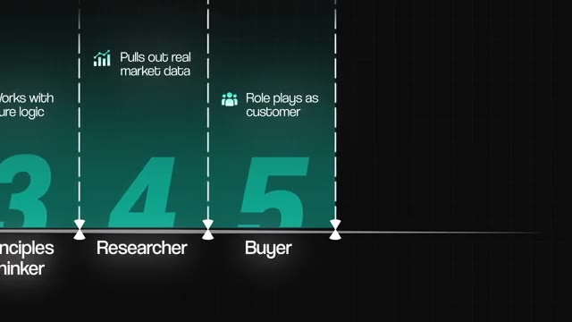
🔍 AgrandirEt donc ce que je vais faire tout au long de cette vidéo, c'est en gros construire un petit business du début à la fin. Comme ça, vous pouvez voir chaque amélioration fonctionner sur un cas réel. Donc l'idée que je veux développer, c'est un outil à 9 dollars par mois qui transforme une transcription YouTube en une semaine de publications LinkedIn. Alors laissez-moi en fait juste ouvrir Cloud Code et le passer au crible en direct. Très bien, nous y voilà en ce moment même dans un nouveau projet Cloud Code. Vous pouvez voir ici, tout ce que nous avons, c'est un fichier cloud.md, qui ne contient pratiquement rien. Je lui ai juste dit que votre rôle ici est de nous aider à gagner de l'argent. Et ensuite, nous avons notre dossier dot cloud avec une compétence à l'intérieur. Et c'est la compétence row dont je venais de vous parler. Donc tout ce que je vais faire, c'est taper slash roast et dire, j'ai cette idée de créer un truc à 9
Interface & Outils : VS Code, Terminal Claude Code, CLI Windows
Contenu textuel & Code : Commande `claude --dangerously-skip-permissions` et interface de l'agent Claude Code v2.1.158
Action / Démonstration : Lancement de l'agent IA Claude Code dans le terminal pour démarrer le développement du projet.
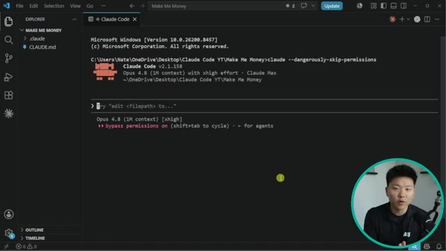
🔍 Agrandirmois où les gens déposent un lien de vidéo YouTube et cette transcription est transformée en une semaine de publications LinkedIn. Je vais donc envoyer ce message. Comme vous pouvez le voir ici, avant qu'il n'exécute le conseil, il a trois questions rapides à nous poser. La première chose est donc de savoir qui est l'acheteur cible réel pour cet outil à 9 dollars par mois. Et gardons cela aussi large que possible pour l'instant et voyons vraiment ce que le conseil peut faire. Je vais dire toute personne ayant un lien YouTube, quel est votre avantage ici ? Qu'avez-vous déjà ? Disons simplement que nous n'avons aucun avantage réel. Nous n'avons aucune distribution, mais nous pouvons construire quelque chose rapidement avec Cloud Code. Et nous allons envoyer ça. Et puis quel est notre
Interface & Outils : VS Code / Claude Code CLI (terminal intégré)
Contenu textuel & Code : Commande saisie : "/roast I have this idea to make a $9 a month tool where people drop in a YouTube video link and that transcript gets turned into a week's worth of LinkedIn posts."
Action / Démonstration : Exécution de la commande `/roast` dans l'outil Claude Code par l'utilisateur.
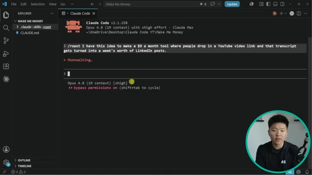
🔍 Agrandircontraintes et budget ? À quelle vitesse avez-vous besoin de gagner votre premier dollar ? Disons simplement que nous avons un peu de marge de manœuvre, mais pas trop. Nous allons donc envoyer ces réponses. Et maintenant, nous devrions voir le véritable conseil se mettre en place. Voici donc le dossier que le conseil va évaluer. Et nous allons voir chacun de ces agents se mettre en place, le contrarien, l'expansionniste, puis les autres. Et pendant que cela s'exécute rapidement, ce que je veux faire, c'est prendre ceci, ouvrir une autre session et dire simplement : voici mon idée. Et dire simplement : pensez-vous que c'est bon ? Pensez-vous que cela fonctionnera ? Pensez-vous que je peux gagner de l'argent ? Et ce sera juste sympa d'y revenir après avoir vu ce que le conseil dit et de voir ce qu'il aurait dit si nous n'avions pas fait cela. Quoi qu'il en soit, vous pouvez voir que nous avons maintenant ces
Interface & Outils : Éditeur de code (VS Code) avec interface CLI Claude Code
Contenu textuel & Code : Commande `/roast` avec description d'un outil de transformation de vidéos YouTube en posts LinkedIn, et les réponses aux questions de l'assistant (cible, avantage, contraintes et budget).
Action / Démonstration : Soumission des réponses aux questions de Claude Code pour obtenir un conseil stratégique ("roast").
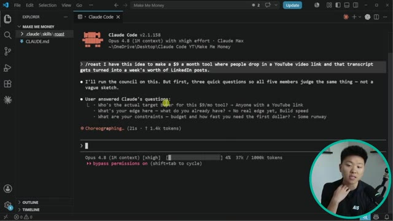
🔍 Agrandircinq sous-agents en cours d'exécution et je ferai le point avec vous les gars quand ce sera terminé. D'accord. Le verdict ici est de réajuster et la confiance en cela est très élevée. Donc, en une ligne, il est dit : tuez le produit de posts YouTube vers LinkedIn à 9 dollars exactement tel qu'il est décrit. C'est un produit gratuit sans connexion, banal, enveloppé dans un abonnement structurellement conçu pour le désabonnement. Mais gardez le moteur et visez une niche payante étroite avec les deux fonctionnalités qui constituent le véritable fossé concurrentiel, à savoir la correspondance vocale prouvée et la publication programmée directe. Donc, ici, vous pouvez voir que cela entre dans les détails du pourquoi.
Interface & Outils : VS Code / Claude Code
Contenu textuel & Code : Texte du rapport d'analyse : "THE VERDICT: RESHAPE", "Confidence: high", "The call in one line: Kill the '$9 YouTube+LinkedIn posts' product exactly as described..."
Action / Démonstration : Affichage à l'écran du compte-rendu textuel et des conclusions générées par les sous-agents.
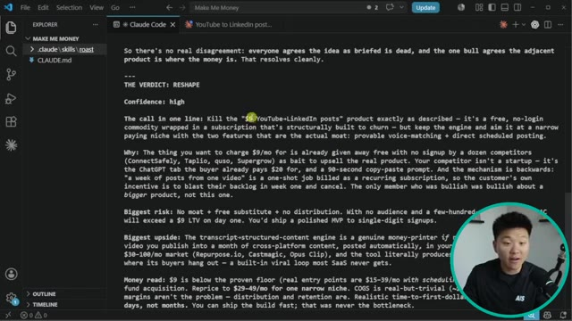
🔍 AgrandirCela nous amène à notre plus gros risque, c'est-à-dire l'absence de barrière à l'entrée, un substitut gratuit et l'absence de distribution sans audience avec un budget de quelques centaines de dollars. Le CAC, c'est-à-dire le coût d'acquisition client, dépassera la LTV, la valeur vie client, de 9 dollars dès le premier jour, et vous mettriez en ligne un MVP soigné, un produit minimum viable, pour une poignée d'inscriptions. Cela passe en revue le plus grand potentiel de hausse si l'on veut voir le verre à moitié plein, le signal financier positif, le test de 48 heures le moins coûteux. Donc ce qu'il nous recommande de faire avant d'écrire le moindre code, ce serait de choisir une niche, d'envoyer un message privé ou un e-mail à 20 ou 30 d'entre eux, et de voir s'il y a réellement un marché. De voir si les gens payeraient pour cela. Voici donc le score global. Le point de vue contrarien a donné
Interface & Outils : Visual Studio Code
Contenu textuel & Code : Texte affiché dans l'éditeur : "Biggest risk: No moat + free substitute + no distribution. With no audience and a few-hundred-dollar budget, CAC will exceed a $9 LTV on day one..."
Action / Démonstration : Visualisation du texte d'analyse stratégique généré par l'IA dans l'éditeur de code.
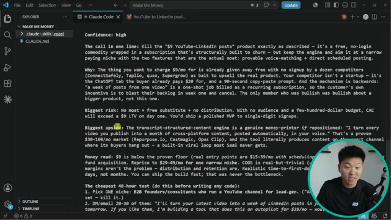
🔍 Agrandirnous a mis 2 sur 10. Expansionist nous a donné un 8 sur 10. On a eu un 3 sur 10, un 2 sur 10, et un deux sur 10. Donc évidemment, on voudrait remodeler cette idée. Maintenant, allons voir rapidement sur le Claude de base ce qu'on a obtenu. On dirait qu'il y a quelques questions auxquelles je dois répondre. Alors, laissez-moi faire ça rapidement. En fait, je dois relancer ceci parce qu'il a effectivement utilisé la compétence de critique sans que je le lui demande, ce qui prouve que, vous savez, que c'est bien, non ? Mais laissez-moi juste relancer ceci et dire explicitement : n'utilise pas la compétence de critique. Et maintenant, celui-ci est revenu. Il nous a bien donné une bonne analyse qui disait du genre, vous savez, c'est probablement quelque chose que vous voulez retravailler un peu avant de l'envoyer pour de vrai. Mais ce conseil est tellement plus générique et on n'a pas eu les bonnes perspectives. Et il ne dit même pas vraiment
Interface & Outils : VS Code, extension/terminal Claude Code intégré
Contenu textuel & Code : Description de l'idée SaaS à 9 $/mois (« YouTube to LinkedIn posts »), module « AskUserQuestion » avec des choix de ciblage et d'avantages compétitifs (LinkedIn audience, Build speed / AI dev, Access to buyers, Nothing yet, Other).
Action / Démonstration : Le curseur de la souris survole l'interface de questions interactives générées par Claude Code pour répondre aux interrogations sur l'idée de produit.
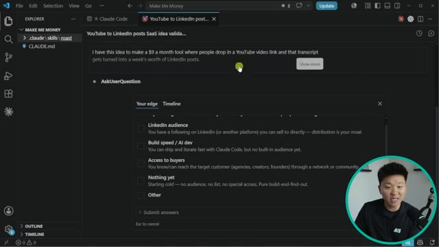
🔍 Agrandirnous dire ce que nous devrions faire pour réellement mener cela à bien. Et étant donné que nous venons d'obtenir Opus 4.8 et que les modèles vont s'améliorer de plus en plus, tout le problème de la flagornerie est quelque chose dont tous ces fournisseurs de modèles ont conscience et, vous savez, prennent des mesures pour s'assurer qu'il ne s'agit pas simplement d'un béni-oui-oui. Mais clairement, si vous comparez ces deux résultats, obtenir en quelque sorte un conseil qui possède différents domaines d'expertise et différentes personas va être bien meilleur pour vous aider réellement à analyser les décisions commerciales et à examiner ce que vous devriez faire pour gagner de l'argent.
Interface & Outils : Visual Studio Code avec extension/intégration Claude Code.
Contenu textuel & Code : Texte d'évaluation d'un outil SaaS à 9$ convertissant des vidéos YouTube en publications LinkedIn, avec des sections sur le test minimal et le positionnement.
Action / Démonstration : Consultation de l'analyse textuelle générée par l'IA dans l'éditeur de code.
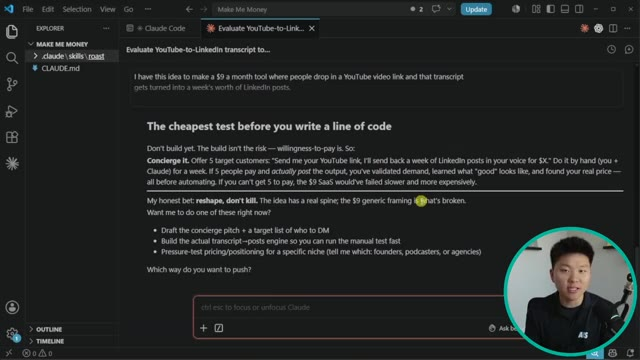
🔍 AgrandirC'est donc ainsi que fonctionne la compétence de critique. Même si vous ne voulez pas utiliser exactement cette compétence, je pense que la méthodologie qui consiste à soumettre constamment vos idées à des tests de résistance, à toujours avoir un avocat du diable, à les examiner sous différents angles, est la meilleure façon de prendre une bonne décision. Même s'il ne s'agit pas explicitement de gagner de l'argent, c'est une très bonne méthode et un excellent réflexe par défaut lorsque vous parlez à Claude ou à n'importe quel modèle d'IA d'ailleurs.
Interface & Outils : VS Code / Interface de terminal Claude Code
Contenu textuel & Code : Texte généré par l'IA incluant des conseils stratégiques, des scores de conseil (Contrarian 2/10, Expansionist 8/10, etc.), et des informations sur les tokens (5% 50k / 1000k tokens).
Action / Démonstration : Affichage des résultats d'une analyse de critique et de tests de résistance d'une idée de projet.
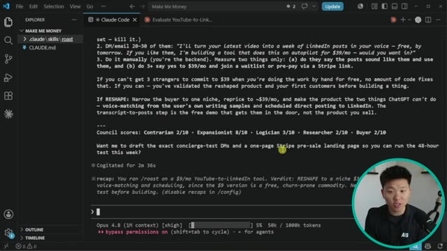
🔍 AgrandirTrès bien, donc c'était roast. Maintenant, une fois que Claude a réellement construit quelque chose pour vous, il y a une étape qu'il oublie presque toujours et c'est celle qui peut vous coûter des jours à réparer. Donc Claude va vous remettre quelque chose qui a l'air terminé, mais quelque chose de terminé et quelque chose qui fonctionne réellement ne sont pas du tout la même chose. Et c'est, encore une fois, un vrai problème mesuré. Il y a eu une étude de l'université de New York où des chercheurs ont examiné environ 1 600 programmes générés par GitHub Copilot.
Interface & Outils : Navigateur web (arXiv.org)
Contenu textuel & Code : Article de recherche universitaire sur la sécurité des contributions de code de GitHub Copilot (arXiv:2108.09293).
Action / Démonstration : Affichage d'une ressource externe pour illustrer les risques liés aux erreurs de code générées par l'IA.
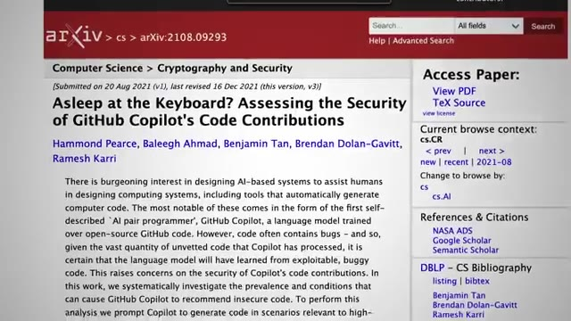
🔍 AgrandirEh bien, nous savons tous que Copilot n'est pas le meilleur, mais de toute façon, environ 40 % d'entre eux contenaient des vulnérabilités de sécurité. Et ce qui fait peur avec ces erreurs, c'est qu'elles sont super faciles à rater. Donc, la plupart du temps, vous ne savez même pas qu'elles existent jusqu'à ce que quelque chose plante devant un client ou dans une sorte de pire scénario possible pour qu'un plantage se produise, comme lors d'une démo en direct. Je me souviens d'une fois en particulier où nous envoyions une tonne d'e-mails à des personnes qui voulaient travailler avec nous, mais nous n'avions pratiquement pas la capacité de le faire.
Interface & Outils : Document textuel ou article de recherche.
Contenu textuel & Code : Texte scientifique mentionnant GitHub Copilot et le taux de vulnérabilité de 40 %.
Action / Démonstration : Affichage d'une étude de recherche pour appuyer l'argument sur les failles de sécurité de l'IA.
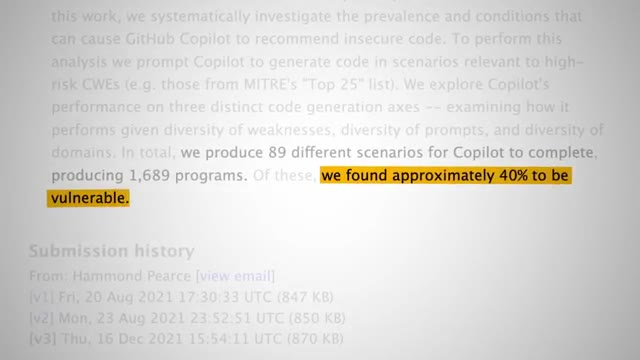
🔍 AgrandirDonc, nous envoyions des e-mails pour les prévenir. Et nous avions des centaines de personnes à contacter. Et donc l'agent que j'étais en train de construire m'a dit qu'il avait envoyé tous ces messages de prospection. Et je ne l'ai su que quatre jours plus tard, quand j'ai vérifié l'e-mail et j'ai vu qu'il n'en avait envoyé qu'environ les 25 premiers pour cent. Donc je ne sais pas exactement pourquoi, parce qu'il m'a affirmé avec assurance, ouais, j'ai envoyé tous ces e-mails, tout est prêt. Donc non seulement il n'a pas fait ce qu'il était censé faire, mais en plus il a menti à ce sujet. Et donc dans cette situation, ce n'était pas vraiment un gros problème, évidemment, parce que ce n'était pas du genre une situation à très haut risque où cela nous aurait coûté une tonne d'argent.
Interface & Outils : Interface de type messagerie/agent avec interface sombre sur écran d'ordinateur, et incrustations graphiques vidéo.
Contenu textuel & Code : Texte de chat visible : "Have you sent the emails that I told you to" et "Yes I have sent them".
Action / Démonstration : Affichage d'une démonstration de conversation avec un agent IA simulant l'envoi d'e-mails, illustrant un faux rapport de tâche.
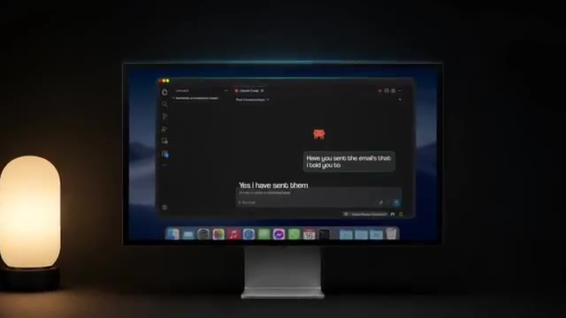
🔍 Agrandir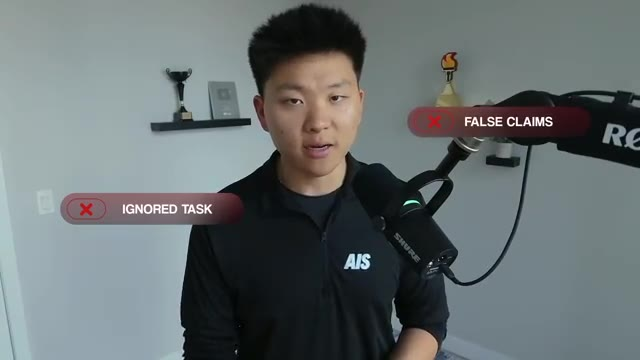
🔍 AgrandirMais imaginez à quoi cela aurait ressemblé si cela avait légitimement construit un tas de code sombre, c'est-à-dire, vous savez, du code que vous n'avez pas écrit, et que cela livre des fonctionnalités ou construit des automatisations. C' s'agit d'une affaire plutôt importante et légitime, qui, si elle ment à ce sujet ou le fait mal, pourrait vraiment entraîner la perte d'une tonne d'argent pour votre entreprise. La solution ici est de faire en sorte que Claude vérifie son propre travail avant même de vous le confier. Et ensuite, de lui faire également vérifier le travail qu'il vous a déjà confié. Pensez donc à la manière dont les voitures sont construites. à l'usine, ils testent chaque pièce de la voiture individuellement. Et puis, lorsque l'ensemble est assemblé, ils le testent à nouveau plusieurs fois. Et c'est fondamentalement la méthodologie avec laquelle nous voulons travailler lorsque nous
Interface & Outils : Graphismes vidéo et B-roll visuel
Contenu textuel & Code : Textes illustratifs et schémas conceptuels
Action / Démonstration : Illustration visuelle du sujet de la vidéo par des animations graphiques et du contenu d'illustration.
en utilisant Claude. Celle-ci est un peu différente des autres parce que ce n'est pas vraiment comme une compétence pré-construite que je peux vous donner. Comme je l'ai dit, c'est plutôt une méthodologie. C'est plutôt un changement d'état d'esprit. Et il y a deux parties. Comme je l'ai dit, la première partie est la vérification : avant que Claude ne vous remette quoi que ce soit, vous voulez qu'il vérifie le travail au fur et à mesure. Et puis, bien sûr, au moment où il vous dit qu'il a terminé, vous le soumettez à des tests de résistance plus poussés et vous essayez de trouver ces cas limites auxquels vous n'aviez pas pensé collectivement, que ce soit vous ou Claude lors de la planification. Maintenant, la manière dont vous faites cela, comme les tests de résistance ou la vérification, est un peu différente selon ce que vous êtes réellement en train de construire. Parce que si vous essayez de vérifier une page de destination, c'est totalement différent de vérifier une vidéo montée, un pipeline de données ou quelque chose comme ça. Donc ce n'est pas
Interface & Outils : Graphique animé de présentation (overlay vidéo).
Contenu textuel & Code : Texte affiché : 'VERIFICATION', 'STRESS TEST', 'Verify before delivery', 'Find those edge cases'.
Action / Démonstration : Présentation visuelle des étapes méthodologiques de test et vérification.
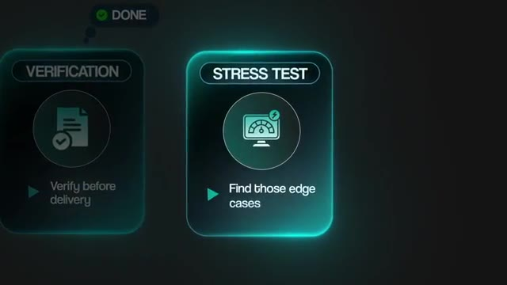
🔍 Agrandirjuste comme un bouton magique sur lequel vous pouvez appuyer. Comme je l'ai dit, c'est plutôt une habitude que vous intégrez à Claude, c'est plutôt une façon de prompter et une façon de concevoir le travail avec Claude Code. Laissez-moi donc vous montrer à quoi cela ressemble en réalité. Je vais demander à Claude de construire une page de destination avec un formulaire de liste d'attente pour notre application ou notre produit. Et ensuite, il va la vérifier avec des captures d'écran. Et il va regarder cette page comme si une vraie personne était en train de la regarder.
Interface & Outils : AUCUNE
Contenu textuel & Code : AUCUN
Action / Démonstration : AUCUNE
Et ensuite, nous allons le soumettre à des tests de résistance en cliquant sur les boutons, en soumettant un tas de formulaires et en essayant de le faire planter pour voir s'il y a quelque chose que nous devons corriger. D'accord. Donc maintenant, sa recommandation pour nous afin de vérifier si cela va fonctionner était d'envoyer des messages directs à certaines personnes et d'obtenir une preuve de concept, n'est-ce pas ? Et donc ce que nous voulons faire, c'est avoir une page de destination pour les envoyer réellement quelque part qui montre les fonctionnalités et la marque et qui donne une impression. Et puis aussi d'avoir une petite liste d'attente pour voir si les gens s'inscrivent réellement. J'ai donc ce prompt ici. Je ne vais pas tout lire en entier et je vais faire défiler lentement si vous voulez mettre sur pause et regarder ce que j'ai écrit ici. Mais l'idée est que nous avons une boucle de vérification. Alors juste ici, n'est-ce pas ? Après
Interface & Outils : VS Code / Claude Code (Terminal intégré)
Contenu textuel & Code : Texte de recommandation stratégique pour le produit, scores du Council (Contrarian, Expansionist, Logician, etc.), et invite de commande en bas.
Action / Démonstration : Affichage des recommandations et du récapitulatif par l'assistant Claude Code dans le terminal.
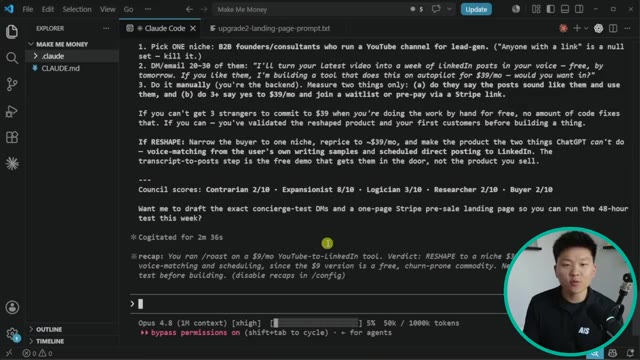
🔍 Agrandirvous le construisez, ne vous fiez pas au fait que cela semble correct. Vérifiez vous-même avec Playwright, et je dois ajouter l'interface de ligne de commande ici, avant de faire un rapport. Démarrez donc le serveur local, utilisez l'interface de ligne de commande Playwright, qui correspond simplement à l'utilisation d'un ordinateur. Elle peut donc ouvrir le site web réel, regarder autour d'elle, prendre des captures d'écran, cliquer ici et là, ce genre de choses. Et elle doit le vérifier. Faites donc une capture d'écran de chaque section individuellement, et examinez-les.
Interface & Outils : VS Code
Contenu textuel & Code : Fichier "upgrade2-landing-page-prompt.txt" contenant des instructions pour l'agent IA : "Verify it yourself with Playwright CLI before reporting back: server. Use the Playwright CLI / a Playwright script to open..."
Action / Démonstration : Consultation et édition du fichier de prompt contenant les instructions de test visuel avec Playwright pour l'agent IA.
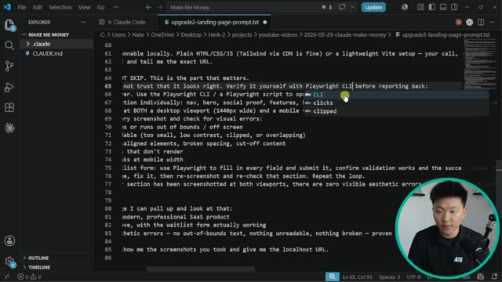
🔍 AgrandirEt si tu en as besoin, tu reviendras et tu feras des itérations, n'est-ce pas ? Donc tout le problème est que tu répètes la boucle et que tu fais des itérations et tu t'arrêtes seulement une fois que chaque section a été capturée en écran pour les deux fenêtres d'affichage et qu'il n'y a pas d'erreurs visibles et que le formulaire de liste d'attente a l'air propre. Et j'ai donné ici, une définition du travail accompli. Donc ce que je vais faire, c'est copier ce prompt et le mettre directement là-dedans et cliquer sur lancer.
Interface & Outils : Visual Studio Code
Contenu textuel & Code : Fichier "upgrade2-landing-page-prompt.txt" contenant des instructions pour utiliser Playwright CLI, réaliser des captures d'écran (desktop et mobile), vérifier les erreurs visuelles et itérer en boucle.
Action / Démonstration : Le présentateur explique les consignes du prompt relatives aux captures d'écran et aux itérations automatiques pour corriger les erreurs visuelles.
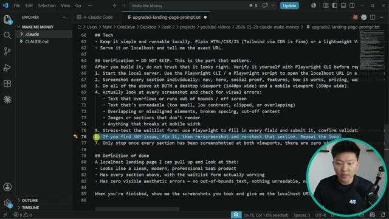
🔍 AgrandirMaintenant, évidemment, comme je l'ai dit plus tôt, selon votre réel, quoi que vous construisiez ici, votre boucle de vérification sera un peu différente. Dans ce cas-ci, elle est capable d'examiner visuellement, de prendre des captures d'écran, des choses comme ça. Mais toute l'idée est que bien souvent du premier coup, vous avez peut-être entendu parler de ce truc appelé le prompt en un seul coup. Du premier coup, l'IA vous amènera peut-être, disons, à 65 % du chemin.
Interface & Outils : VS Code avec le terminal de l'assistant Claude Code intégré.
Contenu textuel & Code : Un fichier texte contenant des instructions de test utilisateur avec Playwright et une définition du statut "terminé" (Definition of done) pour l'agent IA.
Action / Démonstration : L'agent IA analyse les instructions textuelles pour préparer l'exécution des tâches de vérification et de capture d'écran.
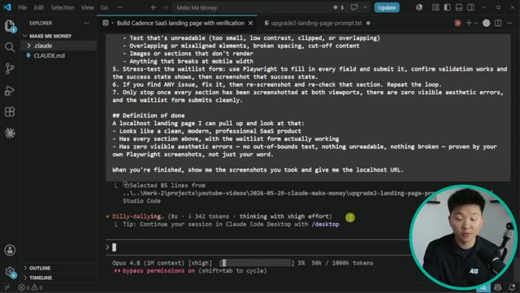
🔍 AgrandirEt votre travail ensuite est de réviser et de juger et d'ajouter votre touche personnelle et de faire des va-et-vient. Mais et si vous pouviez faire en sorte que l'IA vous amène à 90 % du résultat en premier, et qu'ensuite vous partiez de là pour itérer. Et toute l'idée de la vérification et de la validation de son travail en cours de route est là où vous pouvez faire en sorte qu'elle soit un peu moins paresseuse et qu'en fait elle ne s'arrête pas tant qu'elle ne vous a pas donné quelque chose que vous pouvez essentiellement relire rapidement et envoyer, parce que c'est une perte de temps totale si elle vous donne quelque chose et qu'ensuite vous devez faire toutes ces modifications, n'est-ce pas ?
Interface & Outils : VS Code avec extension/intégration Claude Code.
Contenu textuel & Code : Un prompt détaillant la création d'une landing page avec des exigences de qualité (zéro erreur esthétique, formulaire fonctionnel, validation via Playwright) et des commandes Bash pour vérifier les versions de Node, Playwright et Python.
Action / Démonstration : L'agent IA analyse le projet, vérifie l'environnement de développement et se prépare à exécuter les tests avant de construire l'interface.
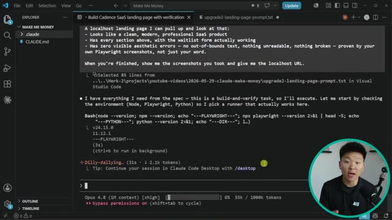
🔍 AgrandirRéfléchissez-y, si vous vouliez quelqu'un qui vous rend des comptes, un vrai humain, vous voudriez qu'il vous donne un rapport que vous pouvez simplement examiner rapidement et qui a l'air bien et qui est tout à fait réel. Vous n'apprécieriez pas autant l'employé qui vous donne des choses à examiner et qui, à chaque fois qu'il vous remet quelque chose, vous oblige à faire énormément de changements. Donc, comme vous pouvez le voir, il est en train de rassembler cette petite liste de tâches et il va parcourir et exécuter la boucle de vérification et corriger jusqu'à ce qu'il y ait zéro erreur.
Interface & Outils : VS Code, Terminal intégré, Claude Code CLI
Contenu textuel & Code : Commandes de vérification de l'environnement Bash (node, npm, playwright, python), instructions sur le prompt et statut d'exécution de l'agent IA avec le modèle Opus 4.8.
Action / Démonstration : L'agent vérifie la disponibilité de Node et Playwright, analyse l'environnement et planifie la construction de la landing page.
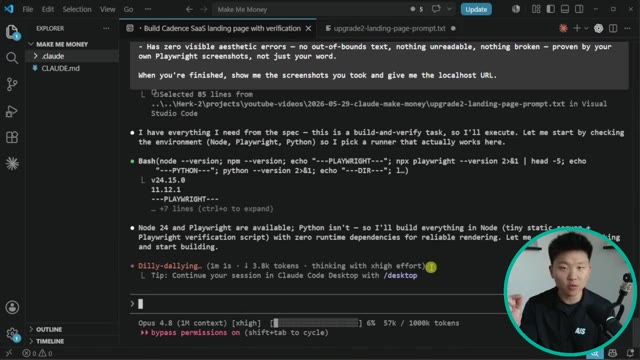
🔍 AgrandirDonc je vais simplement me reconnecter avec vous les gars quand ce sera terminé. D'accord, donc tout est vérifié de bout en bout, apparemment. C'est fait et vérifié, pas seulement affirmé. Nous avons une URL en direct, que je vais ouvrir dans une seconde, mais voyons, il a dit, il a construit une page unique, une page de destination de liste d'attente haut de gamme pour cadence avec les huit sections. La boucle de vérification a réellement fonctionné et a réussi. Playwright a pris des captures d'écran de toutes les sections.
Interface & Outils : VS Code (éditeur de code).
Contenu textuel & Code : Rapport Markdown affichant une commande Bash de vérification, le contenu d'un fichier `submissions.json`, une URL locale (http://localhost:4321), et un récapitulatif technique des composants construits et testés (Playwright, Chromium, validation de formulaire).
Action / Démonstration : Présentation du rapport final de déploiement et de vérification automatisée d'une page de capture (landing page) pour le projet "Cadence".
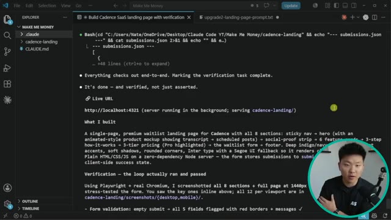
🔍 AgrandirSi j'ouvre ce dossier juste ici que vous pouvez voir qu'il a créé, cadence landing. Nous avons comme le code réel qui est entré dans la construction du site. Nous avons les nœuds, mais juste ici nous avons des captures d'écran et nous pouvons voir le bureau. Nous en avons 11 et sur mobile, nous en avons également 11 qui ont été prises. C'est donc vraiment, vraiment agréable à voir. Et juste pour vous montrer les gars, si je clique ici, nous pouvons voir qu'il regarde réellement à quoi ressemble la page en fonction de la vue mobile ou bureau.
Interface & Outils : Visual Studio Code (VS Code) avec la webcam du présentateur incrustée en bas à droite.
Contenu textuel & Code : Arborescence de fichiers (node_modules, screenshots, app.js, index.html, server.js, styles.css) et texte descriptif sur la vérification avec Playwright et Chromium.
Action / Démonstration : Navigation dans l'arborescence des fichiers du projet généré pour présenter le code et les dossiers de captures d'écran.
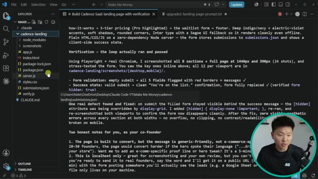
🔍 AgrandirEt c'est comme ça qu'il y parvient. Je veux dire, évidemment, c'est assez typique de l'IA brouillonne. Genre, c'est très générique. Ce n'est pas le sujet. Le point que j'essaie de soulever en ce moment, c'est la boucle de vérification, n'est-ce pas ? Évidemment, nous pourrions faire des choses d'un point de vue du design pour donner à cela un aspect plus personnalisé, pour que ça ait l'air moins créé par l'ia. Donc de toute façon, jetons un œil maintenant au site réel. Si je clique sur ouvrir ici, nous sommes dans une sorte de navigateur intégré à VS Code. Nous pouvons voir le rythme, les fonctionnalités, cliquer sur ce bouton, cela nous fait descendre en zoomant, comment ça fonctionne, la tarification.
Interface & Outils : Visual Studio Code (VS Code), navigateur intégré pour la prévisualisation.
Contenu textuel & Code : Fichiers du projet (app.js, index.html, styles.css, submissions.json, verify.js), arborescence de dossiers 'screenshots'.
Action / Démonstration : Navigation entre les fichiers d'assets (captures d'écran de référence) et prévisualisation en temps réel du développement de la page web.
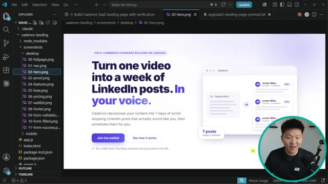
🔍 Agrandir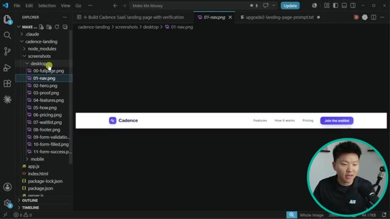
🔍 Agrandir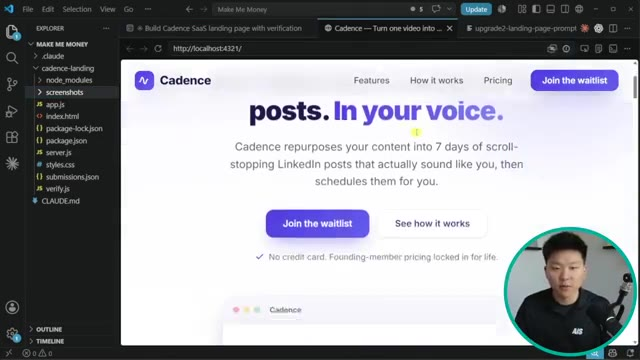
🔍 AgrandirLaissez-moi juste dézoomer un tout petit peu. Voilà. « Rejoindre la liste d'attente » nous amène ici, dans cette section. Nous avons différents abonnés LinkedIn, le chiffre d'affaires annuel, ce genre de choses. Et ces boutons en bas fonctionnent également. Donc, d'un point de vue visuel, mis à part le fait que c'est assez générique d'une IA, c'est bien, non ? Genre, tout est aligné, rien n'est hors limites. Tout le texte est lisible. Les sections sont propres.
Interface & Outils : Visual Studio Code (VS Code) avec une fenêtre de prévisualisation de site web (localhost:4321).
Contenu textuel & Code : Formulaire de capture de leads (Nom de l'entreprise, revenus, abonnés LinkedIn) et section de landing page dédiée aux fonctionnalités SaaS.
Action / Démonstration : Navigation et interaction avec les éléments dynamiques de la page web pour tester le fonctionnement du formulaire et de la mise en page.
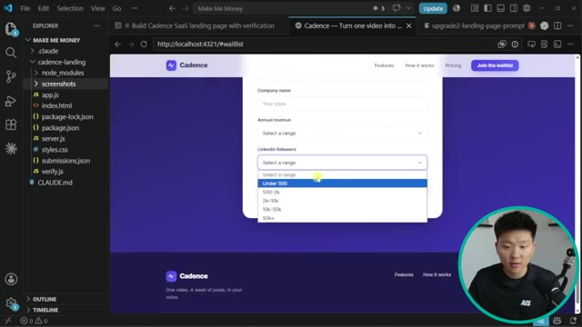
🔍 Agrandir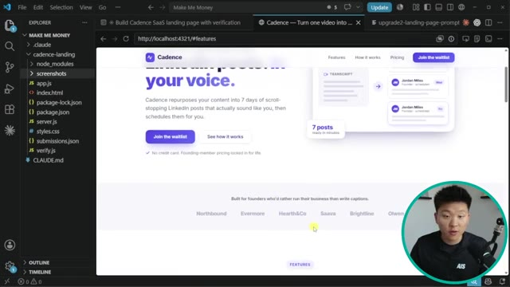
🔍 AgrandirIl n'y a pas vraiment de bugs ou de problèmes. Tiret cadratin. Oh oh. Mais bref, cela nous montre comment nous pouvons obtenir des résultats en utilisant une sorte de boucle de vérification. Maintenant, nous pouvons même aller encore plus loin. Une partie du fait de lui faire vérifier son propre travail ne réside pas seulement dans le processus de construction, mais aussi dans le processus de test de résistance, n'est-ce pas ? Donc, puisque nous avons la possibilité avec notre site web de tester et de nous assurer que les choses sont fonctionnelles, nous n'avons pas encore testé le remplissage du formulaire.
Interface & Outils : Visual Studio Code (VS Code) avec terminal intégré et rendu web.
Contenu textuel & Code : Image #2 contient un rapport technique détaillant : "Form validation", "Success state", "One real defect found and fixed", ainsi que des conseils stratégiques pour l'utilisateur. Commande active : "Make the hero copy e-commerce specific and deploy it".
Action / Démonstration : Démonstration du cycle de vérification d'un agent : l'IA effectue une auto-analyse, rapporte les correctifs apportés à l'interface, propose des améliorations et attend une instruction utilisateur dans le terminal.
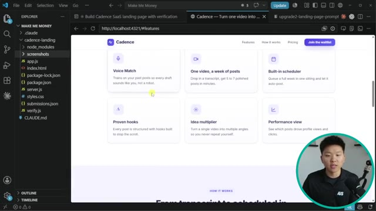
🔍 Agrandir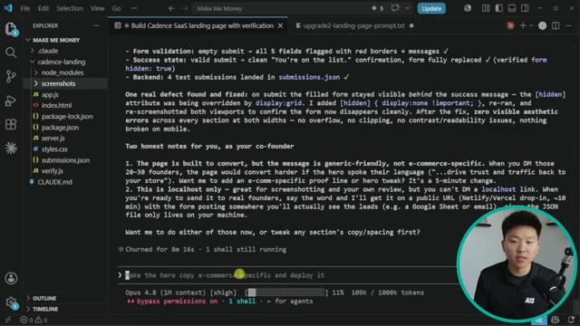
🔍 AgrandirDonc ce que je peux dire, c'est génial. Donc ce que je veux que tu fasses maintenant, c'est d'utiliser Playwright CLI et d'ouvrir un navigateur avec interface graphique et de me montrer que tu soumets des formulaires et de faire plusieurs passages de soumission de formulaires avec différentes options de menu déroulant et différents types d'e-mails, différents types de numéros de téléphone, fondamentalement juste pour tester la robustesse de ce truc afin de s'assurer qu'il n'y a pas de bugs dans l'aspect soumission de formulaire de ce site.
Interface & Outils : VS Code (avec extension ou intégration Claude/Opus).
Contenu textuel & Code : Un compte-rendu de test technique mentionnant la validation de formulaire (erreurs, succès, backend), la correction d'un bug CSS lié à l'attribut `hidden`, et des recommandations stratégiques pour le déploiement. Un prompt utilisateur est visible en bas : "Make the hero copy e-commerce-specific and deploy it".
Action / Démonstration : Revue des résultats de tests automatisés et soumission d'une nouvelle instruction textuelle à l'agent IA pour modifier le contenu et déployer le projet.
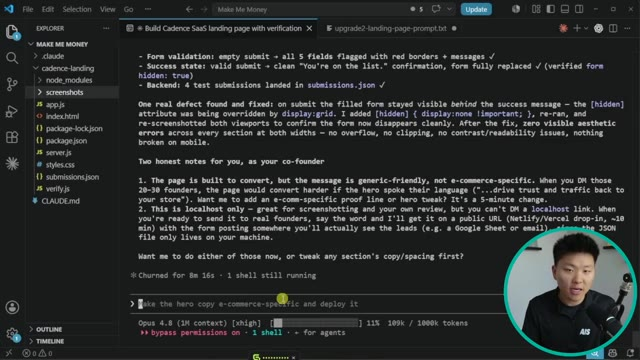
🔍 AgrandirEt donc, quand je dis navigateur avec interface, cela signifie simplement que je peux le regarder, plutôt qu'un navigateur sans interface qui s'exécuterait en arrière-plan et que nous ne verrions pas, même s'il est en train de fonctionner et de travailler en arrière-plan. Donc, ici, vous pouvez voir qu'il vient d'ouvrir un onglet. Il vient de soumettre un formulaire et il est en train de remplir tout un tas de versions différentes ici même. Il le fait très rapidement, n'est-ce pas ? Nous avons vu différentes options de menus déroulants, différents types d'e-mails, différents types de noms.
Interface & Outils : Visual Studio Code, Navigateur web (mode "headed" ou avec interface).
Contenu textuel & Code : Scripts de test automatisés (Playwright), code de landing page, logs de terminal, saisie automatisée de champs de formulaire.
Action / Démonstration : Exécution d'un test automatisé dans un navigateur visible pour stress-tester la soumission de formulaires et vérifier les bugs d'interface en temps réel.
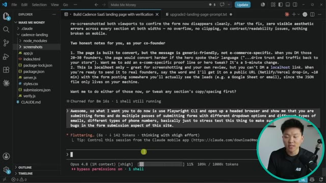
🔍 Agrandir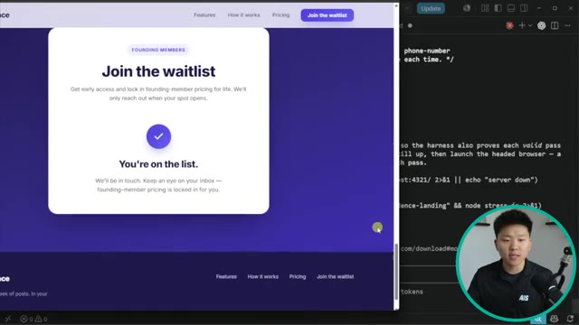
🔍 Agrandir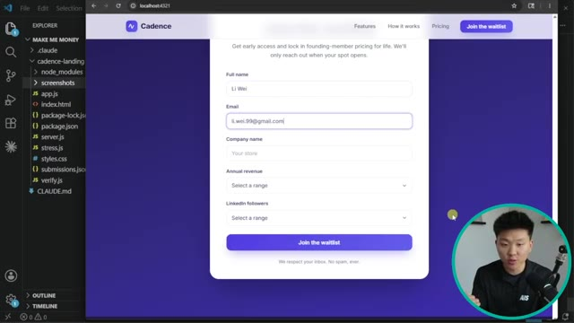
🔍 AgrandirEt évidemment, nous n'avons pas encore de backend configuré, mais ce serait la prochaine étape, n'est-ce pas ? Nous pourrions configurer un backend et ensuite le faire tester davantage. Il était même, je ne sais pas si vous avez vu ça, en train d'essayer de mettre des espaces à des endroits bizarres. Il mettait certains espaces avant l'e-mail. Voilà. Nous venons d'avoir un bug là où ce n'était pas un e-mail valide. Juste là encore. Donc, nous voyons tous ces cas limites que les humains pourraient réellement rencontrer.
Interface & Outils : Visual Studio Code (volet latéral) affichant la structure du projet "cadence-landing" et un navigateur web affichant le projet en local (localhost:4321).
Contenu textuel & Code : Arborescence de fichiers du projet (app.js, index.html, styles.css, etc.) et interface utilisateur de l'application SaaS "Cadence".
Action / Démonstration : Navigation et démonstration de l'interface utilisateur web développée, incluant le formulaire de capture de leads et l'état de succès après inscription.
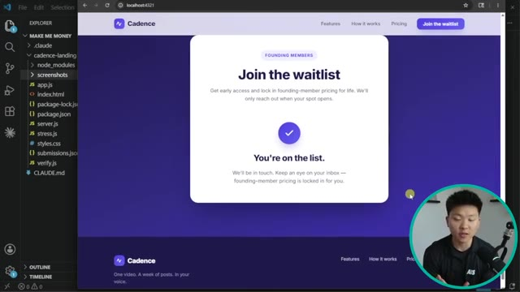
🔍 Agrandir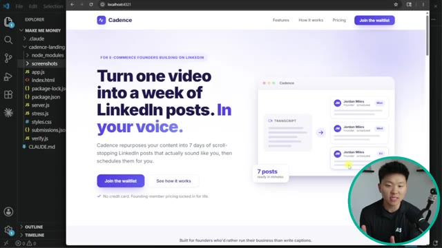
🔍 Agrandir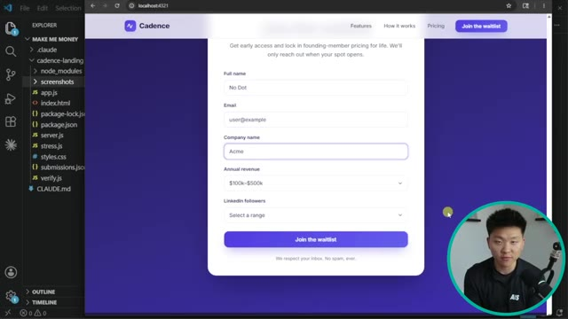
🔍 AgrandirIl y en a un autre, n'est-ce pas ? Et donc l'idée ici, c'est que ça trouve des choses auxquelles vous ne penseriez peut-être pas, ou que vous ne voulez pas rester assis ici à faire manuellement, n'est-ce pas ? C'est donc ça qui est vraiment génial là-dedans, parce qu'on obtient la créativité d'un modèle comme Opus, et ensuite on obtient la capacité pour Claude Code de faire réellement des choses comme ça. Et maintenant, nous comprenons quels sont tous les cas limites et ce que les utilisateurs pourraient faire.
Interface & Outils : VS Code et navigateur web (localhost:4321)
Contenu textuel & Code : Explorateur de fichiers du projet (app.js, index.html, package.json, server.js, styles.css) et formulaire de liste d'attente (waitlist) avec validation d'email.
Action / Démonstration : Navigation et test d'une interface web générée localement.
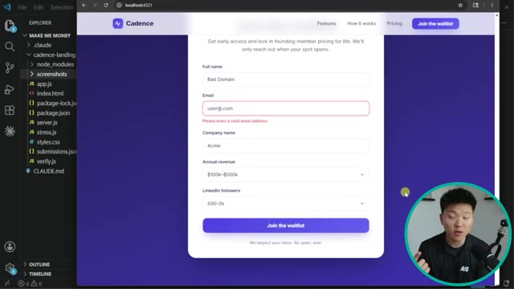
🔍 AgrandirBref, je vais continuer à laisser tourner ceci, mais il y a deux aspects : d'une part, lui faire vérifier son travail du côté de la construction pour vous faire gagner du temps, et d'autre part, bien sûr, du côté des tests de résistance pour vous faire également gagner du temps. On dirait qu'il a trouvé tous les cas limites et il a jugé que c'était suffisant pour cette première exécution. Juste ici, vous pouvez voir que l'intégralité de ses 22 tests sur 22 ont réussi. Il va donc récupérer les preuves, examiner ces réussites et ces rejets, et ensuite, en gros, nous indiquer ce que nous devons modifier, s'il y a lieu.
Interface & Outils : VS Code et navigateur web avec terminal intégré
Contenu textuel & Code : Code JavaScript (app.js, stress.js, verify.js) et retours d'exécution de tests automatisés (Bash)
Action / Démonstration : Exécution d'un script de test de résistance validant le remplissage et la soumission du formulaire SaaS
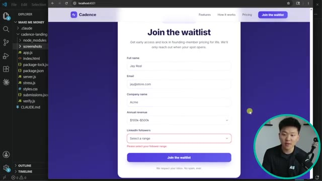
🔍 Agrandir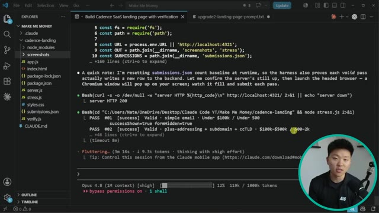
🔍 AgrandirVoilà qui est fait. Nous pouvons voir que nous avons eu huit soumissions valides, puis nous avons eu 14 soumissions malformées. Mais ensuite, il a dit deux notes honnêtes non bloquantes, pas de protection contre les doublons. Donc le même email pouvait s'inscrire deux fois et la validation des emails est intentionnellement indulgente. Donc uniquement la structure, pas la délivrabilité. Ce qui signifie que les gens pouvaient soumettre un faux email, mais s'il correspond à la structure du genre nom au domaine point com, il passera.
Interface & Outils : VS Code (avec une intégration potentielle de Claude Code/Opus en bas).
Contenu textuel & Code : Le texte affiche les résultats d'un test de formulaire : "8 valid", "14 malformed", ainsi que deux notes techniques concernant l'absence de protection contre les doublons ("No duplicate guard") et une validation d'email volontairement souple. On voit également des métadonnées de l'IA "Opus 4.8" en bas de fenêtre.
Action / Démonstration : L'IA présente un rapport de fin de tâche de développement, détaillant les succès et les limitations du système de collecte de leads avant de proposer les prochaines étapes.
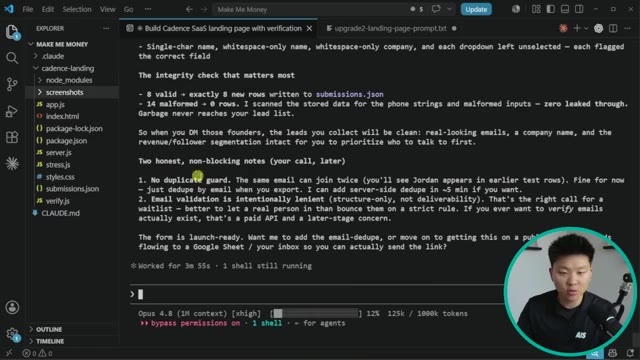
🔍 AgrandirIl n'y a donc pas de vérification de délivrabilité. Ce sont donc deux points sur lesquels, si nous voulions agir, nous pourrions agir, ce auquel je n'avais honnêtement pas pensé tout de suite, vous savez, lors de notre conception initiale. C'est donc très, très utile. Très bien, ce sont donc les deux premières améliorations. Maintenant, elles fonctionnent pour absolument toutes les sorties que Claude vous donne, mais pour les faire fonctionner, vous devez d'abord obtenir cette sortie. Et la plupart du temps, la raison pour laquelle les gens avancent lentement n'a rien à voir avec ce qu'ils font lorsqu'ils travaillent avec Claude.
Interface & Outils : VS Code (avec extension ou intégration d'agent IA).
Contenu textuel & Code : Texte affiché dans VS Code : "No duplicate guard", "Email validation is intentionally lenient (structure-only, not deliverability)".
Action / Démonstration : Revue des résultats de tests d'intégrité de données et planification d'améliorations pour l'agent (déduplication, vérification d'emails).
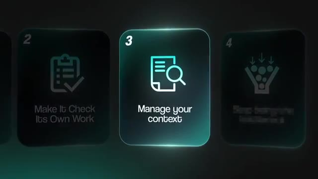
🔍 AgrandirC'est qu'ils se heurtent littéralement à un mur. La conversation commence à se remplir. Claude ralentit, ça empire, ça commence à, vous savez, consumer votre limite d'utilisation, et on a l'impression qu'il n'a tout simplement plus de mémoire. Et encore une fois, il y a une étude à ce sujet. Ça s'appelle en gros la "dégradation du contexte" (Context Rot). Des chercheurs ont testé 18 des meilleurs modèles d'IA du marché, y compris Claude, et absolument tous se mettent à moins bien performer à mesure que la conversation s'allonge. Même s'il s'agit de tâches vraiment, vraiment simples, c'est là qu'on commence à observer une telle dégradation des performances et, vous savez, des hallucinations. Et le problème, c'est que cette baisse commence bien avant que la fenêtre de contexte ne soit complètement pleine. Donc, plus n'est pas mieux. Et une conversation plus longue, littéralement
Interface & Outils : Document de recherche / Rapport technique textuel
Contenu textuel & Code : Texte scientifique évaluant 18 LLMs et leur fiabilité selon la longueur du contexte d'entrée.
Action / Démonstration : Affichage d'un extrait d'étude scientifique pour illustrer la perte de mémoire et les limites des modèles de langage.
...rend Claude stupide. Alors, pensez au contexte de Claude comme à un bureau. Si vous y empiliez un tas de feuilles de papier, et que vous deviez ensuite trouver un document précis, ce serait bien plus difficile à trouver. Ça va vous prendre beaucoup plus de temps parce qu'il y a tellement d'informations là-dedans. Et en plus de ça, si vous n'utilisez pas la meilleure version de Claude, c'est-à-dire le modèle le plus performant, le plus puissant, que ce soit Opus 4.8 ou quoi que ce soit d'autre, il va concevoir les choses moins bien. Il va produire du code plus bâclé, et il pourrait même devenir moins efficace pour la révision, la vérification et les tests de résistance. Donc, ces deux choses qui déterminent secrètement si vous gagnez de l'argent avec Claude sont la gestion de votre contexte et le fait de vous assurer que vous travaillez avec le bon modèle pour le bon cas d'usage.
Interface & Outils : Éditeur de code (Prompt.txt)
Contenu textuel & Code : Texte de prompt pour un 'Evolution Simulator with Neural Networks' avec des instructions sur les créatures, l'environnement et la visualisation.
Action / Démonstration : Présentation du prompt utilisé pour tester les limites du contexte (stress testing) d'un modèle IA.
Donc, la solution ici est de gérer votre contexte correctement. Il y a beaucoup de choses qui entrent en jeu, mais en gros, il s'agit de vous assurer que vous vous en occupez et que vous y pensez avant que cela ne détruise silencieusement vos résultats. Et il y a quelques commandes qui valent la peine d'être connues ici. La première est donc d'utiliser slash context, qui vous permet de voir exactement ce qui consomme votre fenêtre de contexte. Slash clear vous permet de tout effacer et de repartir à neuf. Au lieu d'utiliser slash compact, qui compacte en quelque sorte votre conversation et ensuite vous pouvez, vous savez, continuer.
Interface & Outils : Incrustation graphique vidéo (overlay textuel).
Contenu textuel & Code : La commande textuelle "/clear".
Action / Démonstration : Présentation visuelle d'une commande de terminal permettant de nettoyer le contexte.
J'ai créé ma propre compétence personnalisée appelée transfert de session slash. Donc avant de jamais tout effacer, j'exécute le transfert de session. Il m'écrit un résumé de tout ce qui importe, sur quoi nous travaillons, les fichiers clés que nous avons produits ou les fichiers clés qui contiennent des informations, toutes les décisions ouvertes que j'ai prises, et puis fondamentalement exactement où reprendre. Donc tout ce que j'ai à faire est d'exécuter le transfert de session, de copier ce message, d'effacer le contexte, et de le coller à nouveau.
Interface & Outils : Visual Studio Code / Claude Code
Contenu textuel & Code : Commande affichée : `/session-handoff`
Action / Démonstration : Saisie de la commande personnalisée de transfert de session dans l'interface de Claude Code.
Et maintenant, je suis assis dans une fenêtre complètement propre, mais je reprends fondamentalement exactement là où j'en étais et j'ai l'impression de n'avoir rien perdu. Maintenant, laissez-moi vous montrer quels types de choses vous voulez garder à l'esprit lorsqu'il s'agit de vous assurer que vous n'atteignez pas ce territoire de pourriture contextuelle. Donc, la première chose, et la raison pour laquelle j'utilise cette version CLI en ce moment, ce que j'utilise généralement de toute façon, vous pouvez voir ma ligne d'état ici en bas.
Interface & Outils : VS Code avec extension de terminal/CLI d'IA (Opus 4.8 / Claude).
Contenu textuel & Code : Fichier texte et terminal affichant des instructions de développement pour une landing page SaaS (gestion des doublons, validation d'e-mails, etc.).
Action / Démonstration : Le présentateur explique le fonctionnement de l'outil de développement assisté par IA pendant que l'éditeur de code est affiché à l'écran.
Ce que je regarde, c'est qu'tout au long de mes sessions, je peux voir le modèle que j'utilise, quelle est la fenêtre de contexte. Je peux voir l'effort qui est déployé. Je peux voir fondamentalement un indicateur visuel de la quantité de ma fenêtre de contexte qui a été remplie. Donc 12 %, ce qui fait environ 125 000 jetons sur notre fenêtre d'un million de jetons. Je n'aime pas vraiment laisser cela dépasser un quart de million. Chaque fois que cela dépasse un quart de million, j'ai généralement tendance à commencer une nouvelle session. Donc, il y a quelques éléments dont vous voulez tirer parti, n'est-ce pas ? Nous avons parlé de la commande contextuelle. Donc, si je fais cela, cela va réellement me montrer et visualiser ce qui se passe dans notre session. Donc nous pouvons voir, ouah, tous ces MCP
Interface & Outils : Éditeur de code (VS Code) avec terminal intégré et incrustation vidéo du présentateur.
Contenu textuel & Code : Texte explicatif sur le projet, notes et instructions, ainsi qu'une ligne de commande affichant les métriques du modèle IA (Opus 4.8 [1M context] [xhigh] [12% 125k / 1000k tokens]).
Action / Démonstration : Le présentateur explique et commente l'interface de développement et les indicateurs visuels du modèle d'IA intégré dans son environnement de travail.
les serveurs pourraient être, enfin, ceux-ci ne prennent pas réellement de jetons. Ceux-là sont chargés à la demande, mais s'ils étaient chargés, cela ferait beaucoup de jetons. Nous pouvons voir que nous avons de l'espace libre. Nous avons des compétences, des fichiers de mémoire, des outils système, des instructions système, tout ce genre de choses. Et cela va également nous montrer, vous savez, combien de jetons environ pour chacun de ces éléments. Et c'est bien de pouvoir nettoyer un peu vos produits si vous voulez vous assurer de ne pas commencer avec déjà une tonne de contexte consommé. Cela donne aussi juste ici une suggestion. Donc, lire les résultats en utilisant 490 000 jetons, 49 %. Vous pourriez donc économiser environ 140 000 jetons ici. Mais de toute façon, c'est une chose. Vous pouvez également faire un slash compact ou CloudCode a son compactage automatique. Mais honnêtement, je n'exploite pas beaucoup cela. Il
Interface & Outils : Éditeur de code VS Code avec interface de terminal intégrée.
Contenu textuel & Code : Affichage des statistiques de jetons du contexte (/context) avec graphiques visuels, détails par catégorie (System prompt, System tools, Memory files, Skills, Messages, Free space) et liste des outils MCP disponibles.
Action / Démonstration : Consultation de l'utilisation du contexte et des outils MCP dans le terminal de l'éditeur.
prend beaucoup de temps. J'ai pratiquement créé ma propre compétence, qui s'appelle le transfert de session, que je vais vous donner gratuitement, bien sûr, dans la communauté School gratuite. Mais quand j'exécute ma compétence de transfert de session, j'ai pratiquement demandé à cet outil de me donner un résumé de ce que nous avons fait. Vous savez quoi ? Je vais juste attendre que cela s'exécute et je vais vous montrer exactement ce que cela nous donne. Très bien. C'est donc le transfert de session. Nous obtenons le point de départ, les décisions qui sont verrouillées et ce qui a été livré, les fichiers clés, l'état d'exécution, la vérification, les questions reportées et ouvertes, et ensuite, reprenez ici. Donc maintenant, je peux simplement faire un slash copy, qui récupère tout ce que Claude vient de nous sortir.
Interface & Outils : VS Code (éditeur de code) avec interface de terminal CLI, et une incrustation vidéo du présentateur dans le coin inférieur droit.
Contenu textuel & Code : Commande `/session-handoff` saisie dans le terminal, messages système indiquant « Crystallizing.. », suggestions d'utilisation de la commande `/agent`, ainsi que des informations sur la consommation des jetons (Opus 4.8, 12% utilisés, 125k / 1000k tokens).
Action / Démonstration : Exécution de la compétence personnalisée de transfert de session pour cristalliser l'état de la session et optimiser le contexte de travail.
Je fais mon slash clear. Vous pouvez voir que la fenêtre de contexte se réinitialise complètement. Je colle ça dedans. Et maintenant, notre projet a le contexte exact dans lequel nous étions fondamentalement en train de travailler. Il a tous les fichiers, il sait où chercher, il sait ce que nous faisons, et il sait où reprendre. Et c'est juste super, super utile de pouvoir faire constamment un transfert de session et un nettoyage. Ou même si je voulais faire un transfert de session puis le déplacer vers, genre, je ne sais pas, un modèle différent ou peut-être même codex ou quelque chose comme ça, je peux le faire super, super facilement.
Interface & Outils : VS Code / Terminal intégré
Contenu textuel & Code : Fichier texte "upgrade2-landing-page-prompt.txt" contenant des consignes de vérification, des questions ouvertes (deferred) et une section "Pick up here" pour guider l'IA, avec le terminal affichant l'invite de commande et l'état "Opus 4.8 (1M context)".
Action / Démonstration : Le présentateur colle le contenu du prompt textuel dans le terminal pour réinitialiser et réinjecter le contexte exact du projet.
Et parfois, il va même faire quelque chose comme ça où il dit : j'ai pris le relais. Laissez-moi confirmer rapidement l'état d'exécution actuel avant de recommander notre prochaine action et nous continuons à travailler. Donc cette compétence est super, super utile et facile à utiliser. D'accord, alors c'est maintenant la dernière mise à niveau. Et une fois que vous commencez à l'utiliser, vous produirez plus de progrès en une seule journée que la plupart des gens ne peuvent en produire en une semaine.
Interface & Outils : Visual Studio Code, terminal Claude Code
Contenu textuel & Code : Commandes Bash affichant l'état du serveur local (`curl`), vérification des fichiers du projet (`ls -la`), et message de l'agent IA confirmant qu'il a pris le relais (« I've got the handoff »).
Action / Démonstration : L'agent IA vérifie l'état d'exécution actuel avant de recommander la prochaine action.
Peu importe donc la qualité de vos prompts, il reste une limite infranchissable, et c'est le fait que vous ne pouvez diriger Claude que dans une seule direction à la fois, fondamentalement, parce que c'est vous le goulet d'étranglement. C'est vous le décisionnaire et le relecteur. Et l'équipe d'ingénierie d'Anthropic a d'ailleurs testé cela directement. Ils ont mis en place un agent principal coordonnant une équipe de petits sous-agents travaillant tous en parallèle, et ils ont comparé cela à un agent unique faisant tout le travail seul.
Interface & Outils : Interface graphique animée de présentation de workflows d'agents IA.
Contenu textuel & Code : Texte 'TEAM AGENT' et bloc 'Lead agent' avec une icône d'utilisateur.
Action / Démonstration : Affichage schématique d'une architecture multi-agents ou d'un agent principal de supervision.
La configuration en équipe a évidemment surpassé le.~(\,ou : l'agent unique) de plus de 90 % lors de leur évaluation interne de recherche. Donc très rapidement, au cas où vous ne sauriez pas ce qu'est un sous-agent. Un sous-agent est fondamentalement un Claude séparé qui reçoit sa propre tâche et sa propre fenêtre de contexte propre. Il travaille tout seul de son côté, puis il fait un rapport à cette session de terminal principale. Donc au lieu d'un seul travailleur qui fait tout, vous savez, une étape à la fois, vous avez toute une équipe qui s'exécute, et ils travaillent chacun sur l'un des morceaux en même temps.
Interface & Outils : Interface graphique animée de présentation de workflow d'agents IA.
Contenu textuel & Code : Schéma d'architecture d'IA avec la mention 'LEAD AGENT' et des icônes de sous-agents reliés par des lignes en pointillés.
Action / Démonstration : Visualisation schématique de la structure organisationnelle des agents d'intelligence artificielle.
Donc personnellement, si je fais quelque chose comme planifier une vidéo YouTube, je vais peut-être en avoir un qui fait des recherches sur un certain sujet et un autre qui fait des recherches sur un autre, et un autre qui regarde peut-être les commentaires des vidéos précédentes. La clé ici est que tout ce qui peut se faire en parallèle, indépendamment l'un de l'autre, je vais lancer des sous-agents pour le faire. Et ensuite, quand tout est synthétisé ensemble, je peux prendre ce résultat et faire tout ce que j'ai à faire avec. Et puis je vais ajouter une dernière chose par-dessus tout ça, qui donne vraiment l'impression d'être dans le futur. Et c'est une commande appelée slash goal (objectif). Donc utiliser goal, ça vous permet de définir une ligne d'arrivée, une véritable condition de завершение (complétion). Et ensuite, Claude va fondamentalement travailler tour après tour aussi longtemps qu'il le faudra jusqu'à ce que vous atteigniez cette condition. Et la partie géniale là-dedans, c'est qu'il y a un évaluo- (évaluateur) séparé. Il y a
Interface & Outils : Graphique explicatif animé / Schéma de workflow.
Contenu textuel & Code : Diagramme montrant l'arborescence "Youtube video plan" divisée en trois sous-tâches gérées par des agents IA.
Action / Démonstration : Illustration visuelle du processus de recherche et d'analyse multi-agents décrit par le présentateur.
Un second modèle qui vérifie chaque tour pour voir si, vous savez, done est égal à vrai ou non. Donc Claude n'a pas le droit de se déclarer lui-même terminé. Un modèle différent doit l'examiner avec un rôle différent et réellement l'évaluer et voir si c'est terminé. Et c'est ça qui est génial. Parce que tout le problème dans la mise à jour un, c'était que Claude était tout simplement d'accord avec lui-même ou d'accord avec vous trop souvent. Donc maintenant, vous en avez un différent et cela sépare littéralement l'exécutant du juge.
Interface & Outils : Animation graphique de workflow / Présentation vidéo
Contenu textuel & Code : Diagramme conceptuel avec des nœuds connectés représentant l'interaction entre différents modèles d'IA.
Action / Démonstration : Explication du mécanisme de validation croisée entre modèles d'intelligence artificielle.
Alors, laissez-moi aller de l'avant et lui donner une seule tâche, définir l'objectif et exécuter ceci en direct. Et ce dernier mouvement est cool parce qu'il empile fondamentalement chaque mise à niveau de toute la vidéo dans ce seul test. Parce que l'idée a été validée avec le roast. Il a vérifié son propre travail avant de déclarer que c'est terminé. Et c'est la méthodologie de vérification de la deuxième mise à niveau. Il lance toute une équipe de sous-agents. Chacun s'exécute dans son propre contexte propre.
Interface & Outils : Interface graphique animée de présentation de concepts et fonctionnalités.
Contenu textuel & Code : Texte affichant les mises à niveau (« Upgrade 1 Roast-based validation », « Upgrade 2 Dual-Agent Verification »).
Action / Démonstration : Présentation visuelle des différentes étapes d'amélioration du système d'automatisation.
Pour que personne ne se heurte au mur de la dégradation du contexte. Et ensuite, nous utilisons l'objectif pour mener le tout à bien. D celui-ci est vraiment, vraiment génial parce qu'il combine fondamentalement tout ce dont nous avons parlé jusqu'à présent. Nous avons parlé de s'assurer d'avoir la bonne idée en ayant une sorte de conseil et en jouant l'avocat du diable. Nous avons ensuite parlé de la façon dont vous pouvez demander à Claude de vérifier et de contrôler son propre travail. Puis nous avons parlé du contexte et de veiller à ce que les choses soient propres.
Interface & Outils : VS Code avec une interface de terminal interactif pour Claude / agent IA en bas, et une incrustation vidéo du présentateur en bas à droite.
Contenu textuel & Code : Fichier "upgrade2-landing-page-prompt.txt" contenant des instructions sur le déploiement et l'analyse de risques, avec l'état de l'agent dans le terminal (Opus 4.8, 4% de tokens utilisés).
Action / Démonstration : Exécution d'un prompt dans l'interface de l'éditeur de code pour piloter un agent IA de développement.
Comme vous pouvez le voir, nous venons de faire notre transfert de session. Et maintenant, nous pouvons boucler le tout en utilisant des éléments comme des sous-agents et slash goal pour nous aider à travailler plus rapidement. Donc si je fais slash goal juste ici, vous pouvez voir qu'il est écrit définir un objectif, continuer à travailler jusqu'à ce que la condition soit remplie. Et ensuite, je vais fondamentalement juste coller mes prompts. Donc je vais lancer ceci et nous verrons ce que ça dit. Et vous remarquerez qu'il y a des éléments dont nous avons parlé, comme je viens de le mentionner.
Interface & Outils : Visual Studio Code avec terminal intégré et incrustation vidéo du présentateur.
Contenu textuel & Code : Fichier "upgrade2-landing-page-prompt.txt" contenant des instructions de déploiement, des analyses de risques et des questions, ainsi qu'une invite de commande CLI ("Opus 4.8").
Action / Démonstration : Le présentateur montre l'interface de développement et le terminal pour le transfert de session et l'utilisation de commandes d'agents IA.
Donc, nous avons notre produit. Donc, l'objectif est de construire un kit de mise sur le marché complet, prêt à être exécuté pour notre produit et de l'enregistrer dans ce projet. Le produit est évidemment notre application web. Nous avons notre ICP ici. Et ce qui est vraiment cool, c'est qu'à l'intérieur de l'objectif, nous sommes capables d'exploiter des sous-agents. Donc, utilisez des sous-agents parallèles, un par livrable. Il devrait donc y en avoir six et ils ont chacun leur propre contexte et ils vont chacun produire des fichiers différents qui ne se recouvrent pas.
Interface & Outils : VS Code
Contenu textuel & Code : Texte du prompt définissant l'objectif (Build a complete, ready-to-execute go-to-market kit for our produit and save it in ./go-to-market), le produit (application web transformant une transcription YouTube en posts LinkedIn), l'ICP, et les livrables attendus (positionnement, étude de marché, plan de lancement, modèles de prospection, brouillons personnalisés, calendrier de contenu).
Action / Démonstration : Affichage et lecture du prompt de configuration pour l'agent IA.
Donc c'est ce qu'on lui fait créer. Et pourtant en bas, vous pouvez voir que j'ai défini quand cette chose est terminée, c'est-à-dire que les six fichiers existent et qu'aucun d'eux n'est vide. La recherche de marché a six concurrents ou plus. Les brouillons personnalisés ont 25 brouillons, des choses comme ça. Plus vous pouvez être objectif avec votre objectif, mieux ça va réellement fonctionner parce qu'évidemment, ça va continuer à travailler jusqu'à ce qu'il pense que c'est terminé.
Interface & Outils : VS Code (éditeur de code avec explorateur de fichiers à gauche et terminal intégré en bas)
Contenu textuel & Code : Fichier 'upgrade2-landing-page-prompt.txt' montrant des instructions pour l'utilisation de sous-agents parallèles : fichiers de positionnement, recherche de marché, plan de lancement, modèles de prospection, brouillons personnalisés et calendrier de contenu, suivis des critères de fin (DONE).
Action / Démonstration : Affichage et configuration des instructions du prompt pour l'exécution d'un agent de développement et de test de landing page.
Vous remarquerez également qu'ici, j'ai dit : une fois que les sous-agents ont terminé, exécutez vous-même une passe de vérification. Ouvrez donc chaque fichier, confirmez qu'il atteint le niveau requis, corrigez tout ce qui est superficiel ou générique avant de vous déclarer terminé. Et donc, ceci va simplement s'exécuter. Et maintenant, étant donné que j'ai concentré toute ma réflexion en amont dans cette invite et que j'ai fixé l'objectif, je peux en quelque sorte m'en aller et faire tout ce que je veux jusqu'à ce que ce soit terminé.
Interface & Outils : VS Code
Contenu textuel & Code : Texte de prompt détaillé avec des instructions telles que 'After the sub-agents finish, run a verification pass yourself: open each file...' et une commande PowerShell dans le terminal.
Action / Démonstration : Le présentateur explique les instructions données à l'agent IA pour la vérification automatique des fichiers générés.
Donc cela va s'exécuter en bas à droite. Il y aura écrit objectif actif. Il va nous dire depuis combien de temps l'objectif est en cours d'exécution. Et puis quand c'est terminé, il y aura écrit objectif terminé. Donc je verrai avec les gars quand nous aurons effectivement cet objectif terminé. Très bien, donc ça vient de se terminer, comme vous pouvez le voir, et ça n'a pris qu'environ huit minutes. Donc une chose à propos de l'objectif, c'est que ce n'est pas parce que c'est un objectif et ce n'est pas parce qu'il a une capacité de boucle que vous devez définir des objectifs qui vont tourner pendant des heures et des heures.
Interface & Outils : VS Code (éditeur de code) avec terminal intégré, interface Claude Code CLI.
Contenu textuel & Code : Fichier de configuration et de prompt ouvert dans l'éditeur ("Build and stress-test Cadence waitlist landing page"), commandes PowerShell, exécution de sous-agents en parallèle et indicateur de statut de l'agent en bas ("Stewing... 1m 18s").
Action / Démonstration : Exécution d'un script d'automatisation et lancement de sous-agents en parallèle pour générer des livrables de projet.
J'utilise beaucoup Goal. Et la plupart du temps, j'utilise Goal, ce sont des exécutions qui prennent moins de 20 à 30 minutes parce que je peux être super clair concernant mon prompt et avoir plus confiance dans le fait que ça va atteindre l'objectif. Donc, huit minutes, nous avons nos six fichiers différents. Et gardez à l'esprit que cela a lancé six sous-agents différents et tous les sous-agents travaillaient sur leurs fichiers de manière indépendante, en parallèle. C'est donc une autre raison pour laquelle cela a pu aller assez vite.
Interface & Outils : VS Code
Contenu textuel & Code : Tableau listant les fichiers générés (positioning.md, market-research.md, launch-plan.md, etc.) avec leurs critères (Bar) et leur statut de validation (Status) validés par des coches vertes.
Action / Démonstration : Affichage du rapport de fin d'exécution confirmant la création des 6 fichiers du kit go-to-market.
Mais tout cela a été vérifié. Tout cela a été contrôlé. Et maintenant, ce serait à nous d'être capables d'examiner le positionnement, l'étude de marché, le plan de lancement, les modèles de prospection, les brouillons de prospection et le calendrier de contenu. Et parce que nous avons relié ensemble toutes ces mises à niveau et toutes ces compétences, nous sommes maintenant dans une très bonne position pour pouvoir commencer à exécuter cette vision. Et pensez à ceci. Au total, toutes ces démos m'ont probablement pris moins d'une heure.
Interface & Outils : VS Code (Visual Studio Code)
Contenu textuel & Code : Tableau listant les fichiers : positioning.md, market-research.md, launch-plan.md, outreach/templates.md, outreach/personalized-drafts.md, content/calendar.md avec leurs statuts validés par des coches vertes.
Action / Démonstration : Visualisation des livrables du projet de go-to-market générés par l'IA dans l'éditeur.
Et donc si vous vouliez vraiment, vous savez, en quelque sorte lancer une entreprise comme celle-ci, vous allez y consacrer plus d'une seule heure. Mais pensez à si vous y consacriez, genre, une semaine de travail concentré avec toutes ces stratégies, la génération d'idées, la construction des choses, et ensuite avoir ce plan de lancement complet et tout ce matériel prêt à l'emploi, où est-ce que cela pourrait vous mener ? Et comment auriez-vous pu simplement exploiter Cloud Code pour avoir pu faire quelque chose qui aurait probablement pris une équipe de 10 personnes et qui aurait probablement pris plus de temps ? Donc, juste pour vous montrer ce qu'il y a ici, si je clique sur le plan de commercialisation, nous pouvons voir, regardons d'abord le positionnement. Nous avons notre ICP. Nous avons notre segment A, notre segment B, notre offre principale, notre échelle de paliers. C'était du genre, la tarification a été fixée à 19, 39 et 99 par mois. Nous avons
Interface & Outils : Visual Studio Code (VS Code)
Contenu textuel & Code : Tableaux Markdown, structures de fichiers de go-to-market, fichiers de stratégie de positionnement et de recherche de marché. [DESC_IMAGE_2] Navigation dans l'arborescence du projet et lecture du code source Markdown.
Action / Démonstration : Explications face caméra et démonstration conceptuelle.
logique de mise à niveau. Nous avons notre proposition de valeur en une ligne et nous avons nos trois objections les plus tranchantes avec des réfutations. Je pourrais donc utiliser ChatGPT pour cela. Nous avons : je ne publie pas assez sur LinkedIn pour en avoir besoin. Les publications de l'IA ont l'air fausses et nuiront à ma marque. Nous avons donc de bonnes réfutations pour tout cela. Et nous pouvons évidemment passer par là, lire tout cela et y apporter notre touche personnelle. Nous avons également notre étude de marché. Nous avons donc notre produit, notre angle d'attaque, notre ICP, nos concurrents, qui en a trouvé environ sept. Et nous avons dit qu'il en fallait au moins sept. Je crois que nous en avons aussi des adjacents. Nous avons un tableau comparatif complet de ceux-ci. Nous avons l'endroit où Cadence s'intègre. Pourquoi 19 dollars est le bon prix d'entrée. Donc, comme vous pouvez le voir, toutes nos sources sont ici. C'est très approfondi. Nous avons
Interface & Outils : VS Code (éditeur de code)
Contenu textuel & Code : Fichier Markdown contenant le texte sur les objections : "Objection 2: 'I don't post on LinkedIn enough to need this.'" et "Objection 3: 'AI posts sound fake and will hurt my brand.'" accompagnées de leurs réfutations respectives.
Action / Démonstration : Visualisation du contenu textuel de stratégie marketing dans l'éditeur pendant que le présentateur en discute.
nous avons aussi notre plan de lancement. C'est donc un plan de lancement sur 14 jours, que nous pourrions en gros simplement suivre. Nous avons notre prospection, et ensuite nous commencerions à créer notre contenu sur la base de ce calendrier. Donc de toute façon, c'est ainsi que nous sommes capables d'exploiter des sous-agents, des objectifs, des automatisations, d'autres choses de ce genre pour vous assurer de cesser d'être le goulot d'étranglement. Vous passez grandement du rôle de bâtisseur et de producteur à celui de solveur de problèmes, de décideur, de réviseur, de juge.
Interface & Outils : VS Code (Visual Studio Code).
Contenu textuel & Code : Fichier Markdown en cours d'édition montrant un plan de lancement sur 14 jours ("Cadence – 14-Day Launch Plan to First Paying Customer"), avec des sections sur le budget et les outils.
Action / Démonstration : Navigation dans l'arborescence des fichiers du projet et consultation du plan de lancement markdown.
C'est comme ça que vous devez exploiter ce type de technologie pour vous aider à développer votre entreprise, pour vous aider à gagner plus d'argent. C'étaient donc les quatre améliorations. Arrêtez de le laisser être d'accord avec vous. Ainsi, vous construisez la bonne chose, faites-lui vérifier son propre travail. Ainsi, vous livrez des trucs qui fonctionnent réellement, gérez votre contexte. Pour que Claude reste affûté et arrête d'être le goulot d'étranglement. Utilisez des sous-agents, utilisez la commande slash goal pour que les trucs puissent tourner sans vous. Vous pouvez donc maintenant utiliser ces améliorations pour gagner plus d'argent en utilisant Claude. Vous pouvez obtenir tout ce dont j'ai parlé aujourd'hui dans ma communauté School gratuite. Vous y trouverez également des centaines de ressources et de cours gratuits et plus de 400 000 personnes qui construisent avec Claude. Et si vous êtes prêts à aller plus loin et à créer une entreprise d'IA, vous pouvez alors rejoindre ma communauté Plus où nous participons à des appels hebdomadaires pour répondre à vos questions. Le lien pour ces deux-là
Interface & Outils : Présentation vidéo / Interface graphique de type infographie et plateforme communautaire web (Skool).
Contenu textuel & Code : Texte affichant "4 Upgrades" et les quatre principes : "Stop Letting It Agree With You", "Make It Check Its Own Work", "Manage your context", "Stop being the bottleneck".
Action / Démonstration : Affichage progressif d'une liste de concepts sous forme de cartes graphiques animées, suivi d'une capture de la plateforme communautaire.
communautés est dans la description. Mais bref, c'est tout pour celui-ci. Donc si vous avez apprécié la vidéo ou si vous avez appris quelque chose de nouveau, n'hésitez pas à lâcher un pouce bleu. Ça m'aide énormément. Et comme toujours, je vous remercie d'être arrivés jusqu'à la fin de la vidéo, et je vous dis à tous dans la prochaine. Merci les gars.
Interface & Outils : AUCUNE
Contenu textuel & Code : AUCUNE
Action / Démonstration : AUCUNE